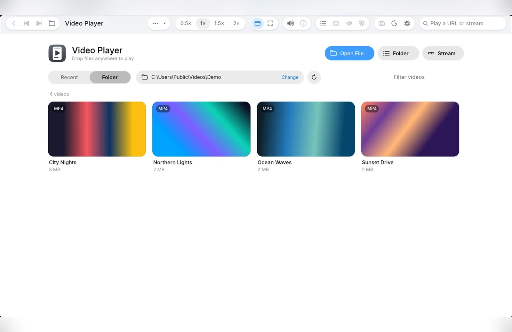
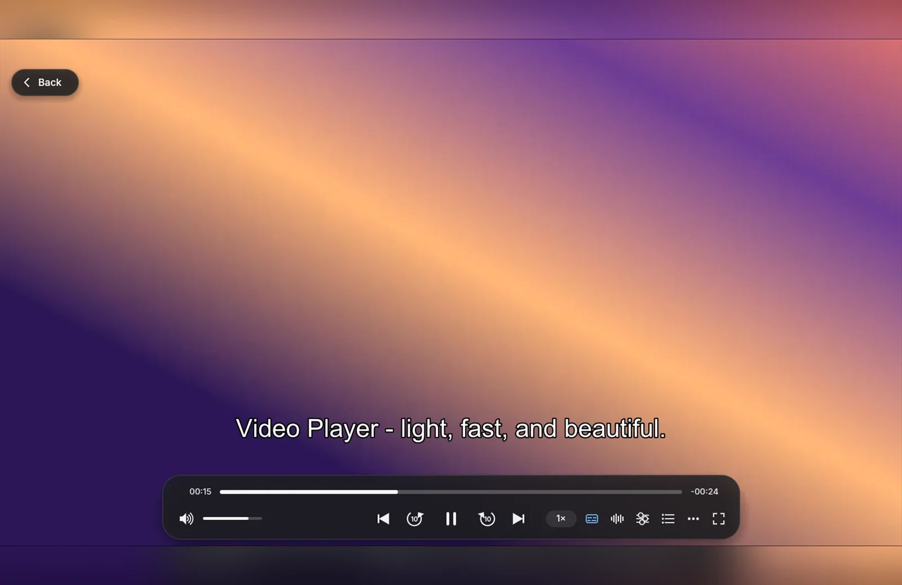
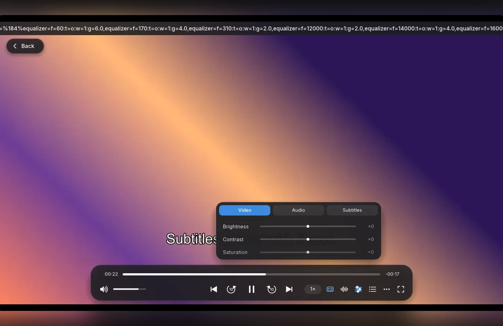
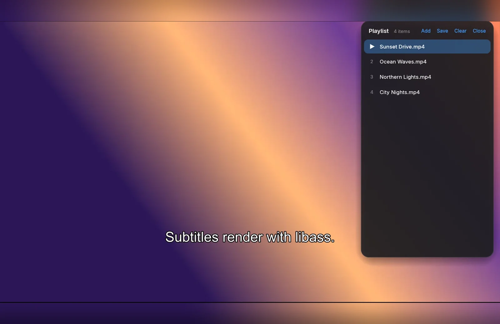
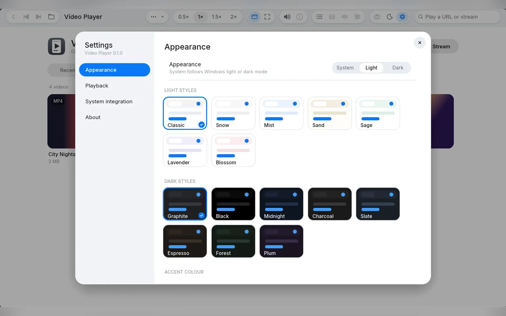
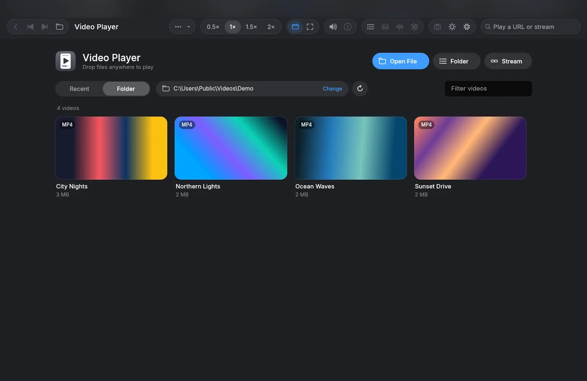

NewSee what's new in Video Player›
Plays almost anything, with a floating control bar drawn over the video, 15 themes and almost no memory use. Installs for your account with no admin rights.
Windows 10 and 11, 64-bit · Installs for your user, no admin rights

A home screen with Recent and Folder tabs and thumbnails. Drop a file anywhere to play.

A translucent bar floats over the video and hides with the cursor. Subtitles render with libass.

Brightness, contrast, saturation, gamma, hue, zoom and aspect ratio. Rotate, mirror or flip.

Queue files, shuffle and repeat. Save as m3u8.

Eight dark and seven light themes. Ten accent colours.

Light, dark or follow Windows. The title bar matches the theme.